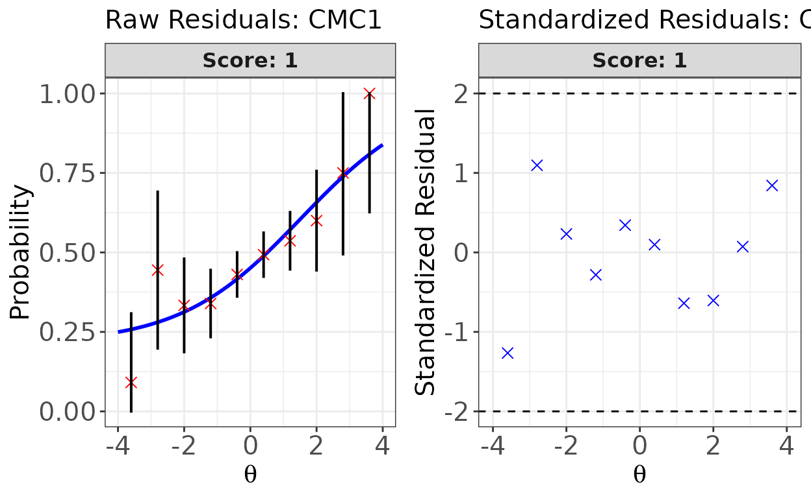
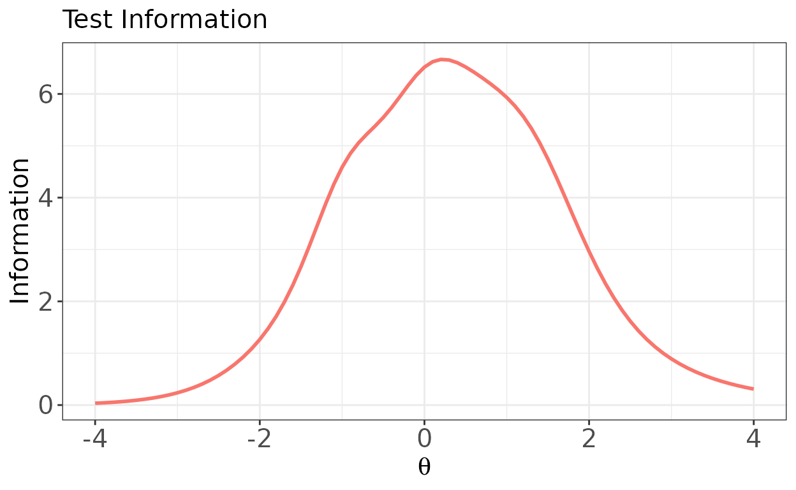

Overview
The irtQ package fits unidimensional item response theory (IRT) models to test data that may contain both dichotomous and polytomous items. The dichotomous models are the one-, two-, and three-parameter logistic models (1PLM, 2PLM, and 3PLM), and the polytomous models are the graded response model (GRM) and the generalized partial credit model (GPCM). A single test can mix these models.
The package covers the steps of a typical IRT analysis: estimating
item parameters by marginal maximum likelihood with the EM algorithm
(est_irt(), est_mg()), calibrating pretest
items with fixed item parameters or fixed abilities
(est_irt(), est_item()), estimating examinees’
abilities (est_score()), evaluating model-data fit
(irtfit(), sx2_fit()), and detecting
differential item functioning (rdif(),
crdif(), grdif(), catsib()). It
also provides functions for item and test information
(info()), item response curves (traceline()),
classification accuracy and consistency (cac_lee(),
cac_rud()), multistage test panels
(panel_info(), reval_mst(),
run_mst()), and classical test theory
(ctt()).
This vignette walks through a short workflow: read item parameters,
simulate responses, calibrate the items, estimate abilities, check fit,
and compute test information. Every example uses the scaling constant
D = 1.
Item metadata
Most irtQ functions take a data frame of item metadata as their first argument, or a fitted object that contains one. Each row describes one item.
| Column | Meaning |
|---|---|
id |
Item identifier |
cats |
Number of score categories (2 for a dichotomous item) |
model |
IRT model of the item: "1PLM", "2PLM",
"3PLM", "GRM", or "GPCM"
|
par.1 |
Slope (discrimination) parameter |
par.2 |
Difficulty for a dichotomous item, or the first threshold for a polytomous item |
par.3 |
Guessing parameter for a 3PLM item, or the second threshold for a
polytomous item; NA for 1PLM and 2PLM items |
par.4, … |
Further thresholds of a polytomous item; NA for
dichotomous items |
Item metadata can be read from the output of other IRT software with
the bring.*() functions (bring.flexmirt(),
bring.bilog(), bring.parscale(), and
bring.mirt(), which requires the suggested
mirt package) or created with shape_df().
The example below reads the flexMIRT parameter file that ships with the
package and keeps the first 25 items, all of which follow the 3PLM.
library(irtQ)
flex_file <- system.file("extdata", "flexmirt_sample-prm.txt", package = "irtQ")
x <- bring.flexmirt(file = flex_file, type = "par")$Group1$full_df
x <- x[1:25, ]
head(x)
#> id cats model par.1 par.2 par.3 par.4 par.5
#> 1 CMC1 2 3PLM 0.7627842 1.4619531 0.26150535 NA NA
#> 2 CMC2 2 3PLM 1.9212842 -1.0499776 0.17529436 NA NA
#> 3 CMC3 2 3PLM 0.9266599 0.3947551 0.09974656 NA NA
#> 4 CMC4 2 3PLM 1.0526419 -0.4070422 0.20119337 NA NA
#> 5 CMC5 2 3PLM 0.8663350 -0.1248170 0.16042040 NA NA
#> 6 CMC6 2 3PLM 1.6956204 0.6261066 0.07216857 NA NAA small metadata frame can also be written directly with
shape_df().
Simulating item responses
simdat() generates item responses from item metadata and
a vector of abilities. Here 500 examinees are drawn from a standard
normal distribution.
Estimating item parameters
est_irt() calibrates the items. The model and the number
of score categories are given for all items at once. A Beta(5, 16) prior
on the guessing parameters, which is the default, stabilizes the 3PLM
estimates; it is written out here for clarity.
fit <- est_irt(
data = resp, D = 1, model = "3PLM", cats = 2, item.id = x$id,
use.gprior = TRUE, gprior = list(dist = "beta", params = c(5, 16)),
verbose = FALSE
)
fit
#>
#> Call:
#> est_irt(data = resp, D = 1, model = "3PLM", cats = 2, item.id = x$id,
#> use.gprior = TRUE, gprior = list(dist = "beta", params = c(5,
#> 16)), verbose = FALSE)
#>
#> Item parameter estimation using MMLE-EM.
#> 29 E-step cycles were completed using 49 quadrature points.
#> First-order test: Convergence criteria are satisfied.
#> Second-order test: Solution is a possible local maximum.
#> Computation of variance-covariance matrix:
#> Variance-covariance matrix of item parameter estimates is obtainable.
#>
#> Log-likelihood: -7122.816Printing the fitted object reports the number of EM cycles, the
number of quadrature points, the first- and second-order convergence
checks, and the log-likelihood. A fuller estimation summary is available
from summary(fit).
getirt() extracts parts of the fitted object, such as
the item parameter estimates.
par_est <- getirt(fit, what = "par.est")
head(par_est)
#> id cats model par.1 par.2 par.3
#> 1 CMC1 2 3PLM 0.548348 1.52622329 0.21322043
#> 2 CMC2 2 3PLM 1.834283 -1.18009847 0.18392144
#> 3 CMC3 2 3PLM 1.194246 0.80370044 0.21057443
#> 4 CMC4 2 3PLM 1.104963 -0.40524060 0.25026086
#> 5 CMC5 2 3PLM 1.184828 -0.02633171 0.14063801
#> 6 CMC6 2 3PLM 1.580076 0.53583179 0.08719593Estimating abilities
est_score() estimates the abilities of the examinees. A
fitted est_irt object can be passed directly, and the
response data stored in the object are used. The code below uses maximum
likelihood estimation (ML) and compares the estimates with the abilities
used to simulate the data. The range argument keeps the ML
estimates within [-4, 4], which matters for examinees who answer all
items correctly or all incorrectly.
Model-data fit
sx2_fit() computes the S-X2 item fit statistic, and
irtfit() computes chi-square and likelihood-ratio
statistics, infit and outfit, and the contingency tables behind the
residual plots.
sx2 <- sx2_fit(fit)
head(sx2$fit_stat)
#> id chisq df crit.val p
#> 1 CMC1 11.342 16 26.296 0.788
#> 2 CMC2 6.096 11 19.675 0.867
#> 3 CMC3 19.788 16 26.296 0.230
#> 4 CMC4 15.647 15 24.996 0.406
#> 5 CMC5 19.984 15 24.996 0.173
#> 6 CMC6 13.013 15 24.996 0.601irtfit() groups the examinees by the ML estimates from
the previous section, and the plot shows the raw and standardized
residuals of the first item.
fit_irt <- irtfit(
x = fit, score = scores$est.theta, group.method = "equal.width",
n.width = 10, loc.theta = "middle"
)
plot(fit_irt, item.loc = 1, type = "both", ci.method = "wald",
show.table = FALSE, ylim.sr.adjust = TRUE)
Test information
info() computes item and test information functions on a
grid of ability values, and its plot() method draws them.
Without item.loc, the plot shows the test information
function.

Where to go next
The package website at https://hwangQ.github.io/irtQ/ has articles that cover each topic in more detail: